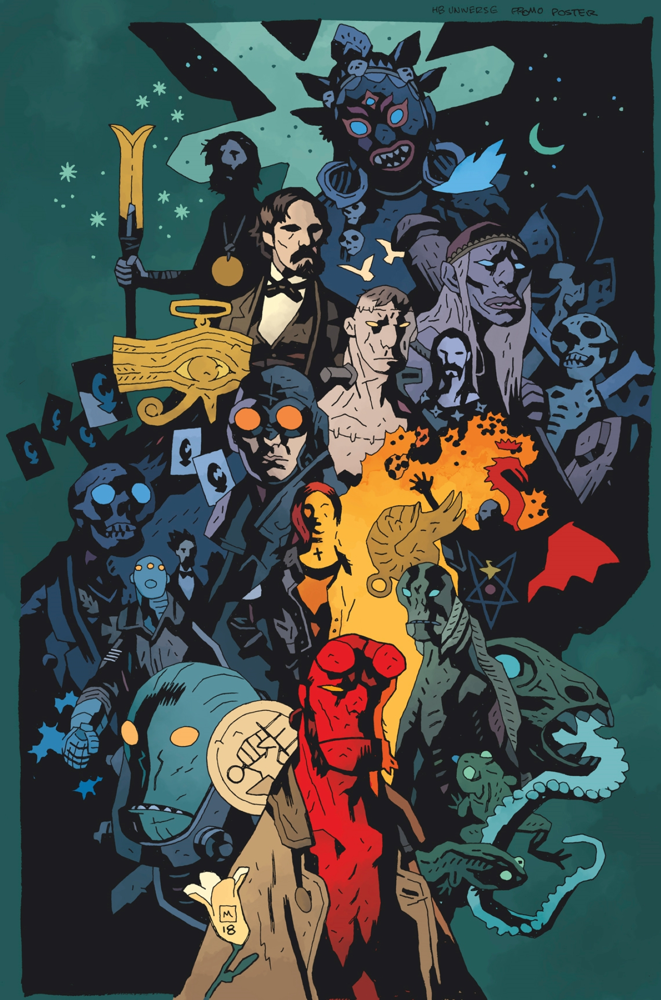
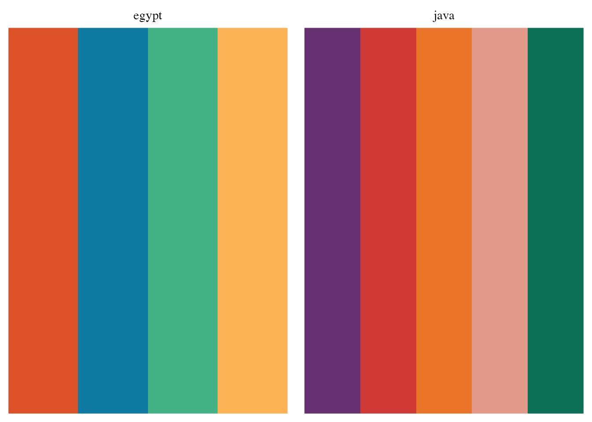
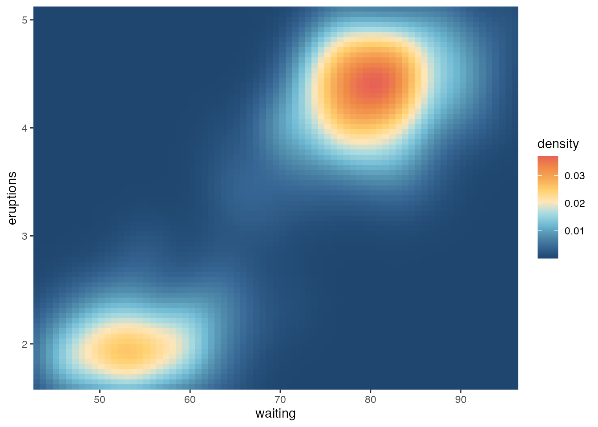

library(palettes)Overview
I am proud to announce that version 0.1.0 of the palettes package is now on CRAN. palettes is an R package for working with colour vectors and colour palettes. I made it with three main goals in mind, each described in a vignette on the package website:
To provide a new family of colour classes (
palettes_colourandpalettes_palette) that always print as hex codes with colour previews.To provide a comprehensive library of methods for working with colour vectors and colour palettes, including methods for ggplot2, gt, biscale, and other colour packages.
To make it easy for anyone to make their own colour palette package. Colour palette packages made with palettes exist solely for the purpose of distributing colour palettes and get access to all the features of palettes for free.
If you just want to jump in and start using palettes, you can install it from CRAN with:
install.packages("palettes")The package website is the best place to start: https://mccarthy-m-g.github.io/palettes/index.html
If you want to learn more about why you should be using palettes, read on to learn more about the motivation of the package and how it makes working with colour vectors and colour palettes easy and fun for everyone.
Origins
The origins of palettes start with a different (in purgatory) package, BPRDcolours, which I was inspired to make while reading Mike Mignola’s Hellboy comics. Every page of Hellboy is a masterclass in colour and contrast, and I thought it would be fun to bring those colours into R:

So how does one make a colour palette package in R? My answer now is to read the Creating a colour palette package vignette and make it with palettes. My answer then was to read the source code of several other colour palette packages, then reimplement the relevant functions in BPRDcolours. Not a great answer, but it’s the approach everyone else was using.
I managed to put together a rough development version, but got sidetracked with other projects soon after and put BPRDcolours on hold. And so my mind was left to brew on a better way to go about this whole colour palette package thing.
Enter palettes
One year after development on BPRDcolours stopped, I started palettes.
The main motivation behind palettes was to standardize and simplify the process of making a colour palette package. No more reading through other’s source code to figure out how to store colours or make them work with ggplot2 plots. No more unnecessary code duplication. I wanted the process of shipping a set of hex colour codes in an R package to be as simple as, well… shipping a set of hex colour codes in an R package. Anything extra like ggplot2 functionality should come for free.
A secondary motivation was to provide pretty printing of colour palettes, with colour previews next to the hex colour codes. This was inspired by packages like taylor and prismatic, which provide their own pretty printing methods for colours using the crayon package. palettes uses the cli package for pretty printing, which has superseded crayon.
Just show me some colour palettes already!
Okay, okay.
Colour classes in palettes come in two forms:
- Colour vectors (
palettes_colour), which are created bypal_colour() - Colour palettes (
palettes_palette), which are created bypal_palette()
Colour vectors can be thought of as a base type for colours, and colour palettes are just (named) lists of colour vectors. To illustrate, let’s use some colours from the MetBrewer package.
pal_colour() is a nice way to create a colour vector.
java <- pal_colour(c("#663171", "#cf3a36", "#ea7428", "#e2998a", "#0c7156"))
java#> <palettes_colour[5]>
#> • #663171
#> • #CF3A36
#> • #EA7428
#> • #E2998A
#> • #0C7156
pal_palette() is a nice way to create named colour palettes.
metbrewer_palettes <- pal_palette(
egypt = c("#dd5129", "#0f7ba2", "#43b284", "#fab255"),
java = java
)
metbrewer_palettes#> <palettes_palette[2]>
#> $egypt
#> <palettes_colour[4]>
#> • #DD5129
#> • #0F7BA2
#> • #43B284
#> • #FAB255
#>
#> $java
#> <palettes_colour[5]>
#> • #663171
#> • #CF3A36
#> • #EA7428
#> • #E2998A
#> • #0C7156
plot() is a nice way to showcase colour vectors and colour palettes. The appearance of the plot depends on the input.
plot(metbrewer_palettes)
Casting and coercion methods are also available to turn other objects (like character vectors or lists) into colour vectors and colour palettes.
You can even cast colour vectors and colour palettes into tibbles.
metbrewer_tbl <- as_tibble(metbrewer_palettes)
metbrewer_tbl#> # A tibble: 9 × 2
#> palette colour
#> <chr> <colour>
#> 1 egypt • #DD5129
#> 2 egypt • #0F7BA2
#> 3 egypt • #43B284
#> 4 egypt • #FAB255
#> 5 java • #663171
#> 6 java • #CF3A36
#> 7 java • #EA7428
#> 8 java • #E2998A
#> 9 java • #0C7156
This is useful if you want to wrangle the colours with dplyr.
library(dplyr)
metbrewer_tbl <- slice(metbrewer_tbl, -8)
metbrewer_tbl#> # A tibble: 8 × 2
#> palette colour
#> <chr> <colour>
#> 1 egypt • #DD5129
#> 2 egypt • #0F7BA2
#> 3 egypt • #43B284
#> 4 egypt • #FAB255
#> 5 java • #663171
#> 6 java • #CF3A36
#> 7 java • #EA7428
#> 8 java • #0C7156
Then go back to a colour palette with the deframe() function from tibble.
library(tibble)
metbrewer_tbl %>%
group_by(palette) %>%
summarise(pal_palette(colour)) %>%
deframe()#> <palettes_palette[2]>
#> $egypt
#> <palettes_colour[4]>
#> • #DD5129
#> • #0F7BA2
#> • #43B284
#> • #FAB255
#>
#> $java
#> <palettes_colour[4]>
#> • #663171
#> • #CF3A36
#> • #EA7428
#> • #0C7156
What about ggplot2 plots?
Just use one of the scale_ functions!
library(ggplot2)
hiroshige <- pal_colour(c(
"#1e466e", "#376795", "#528fad", "#72bcd5", "#aadce0",
"#ffe6b7", "#ffd06f", "#f7aa58", "#ef8a47", "#e76254"
))
ggplot(faithfuld, aes(waiting, eruptions, fill = density)) +
geom_raster() +
coord_cartesian(expand = FALSE) +
scale_fill_palette_c(hiroshige)
There are scale_ functions for discrete, continuous, and binned data, and you can pass additional arguments to them for further customization.
I’m sold. How do I make a colour palette package?
See the Creating a colour palette package vignette, which works through an example package showing the steps needed to make a colour palette package with palettes.
If you do make a package with palettes, let me know through email or Mastodon! In the future I’d like to make a “palettesverse” to showcase and collect all the packages using palettes in one place.
What’s next?
In future versions I would like to:
- Provide an option to choose the symbol used for colour previews
- Add functions for manipulating colour palettes
- Add an interpolation function for bivariate colour scales
- Make a better hex sticker (looking for help on this one!)
If you have other suggestions or requests, please file an issue on GitHub.

Michael McCarthy
Thanks for reading! I’m Michael, the voice behind Tidy Tales. I am an award winning data scientist and R programmer with the skills and experience to help you solve the problems you care about. You can learn more about me, my consulting services, and my other projects on my personal website.
Session Info
─ Session info ───────────────────────────────────────────────────────────────
setting value
version R version 4.2.2 (2022-10-31)
os macOS Mojave 10.14.6
system x86_64, darwin17.0
ui X11
language (EN)
collate en_CA.UTF-8
ctype en_CA.UTF-8
tz America/Vancouver
date 2022-12-21
pandoc 2.14.0.3 @ /Applications/RStudio.app/Contents/MacOS/pandoc/ (via rmarkdown)
quarto 1.2.280 @ /usr/local/bin/quarto
─ Packages ───────────────────────────────────────────────────────────────────
package * version date (UTC) lib source
dplyr * 1.0.10 2022-09-01 [1] CRAN (R 4.2.0)
ggplot2 * 3.4.0 2022-11-04 [1] CRAN (R 4.2.0)
palettes * 0.1.0 2022-12-19 [1] CRAN (R 4.2.0)
sessioninfo * 1.2.2 2021-12-06 [1] CRAN (R 4.2.0)
tibble * 3.1.8 2022-07-22 [1] CRAN (R 4.2.0)
[1] /Users/Michael/Library/R/x86_64/4.2/library/__tidytales
[2] /Library/Frameworks/R.framework/Versions/4.2/Resources/library
──────────────────────────────────────────────────────────────────────────────Citation
BibTeX citation:
@online{mccarthy2022,
author = {Michael McCarthy},
title = {Introducing the Palettes Package},
date = {2022-12-20},
url = {https://tidytales.ca/posts/2022-12-20_palettes},
langid = {en}
}
For attribution, please cite this work as:
Michael McCarthy. (2022, December 20). Introducing the palettes
package. https://tidytales.ca/posts/2022-12-20_palettes
Comments